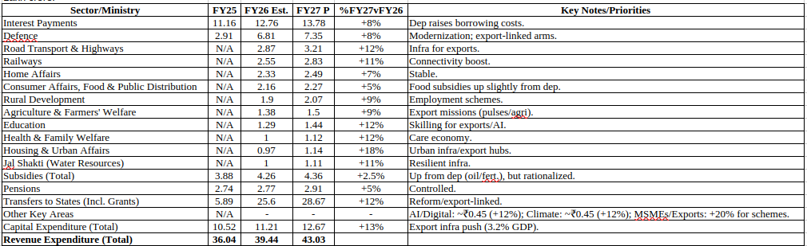
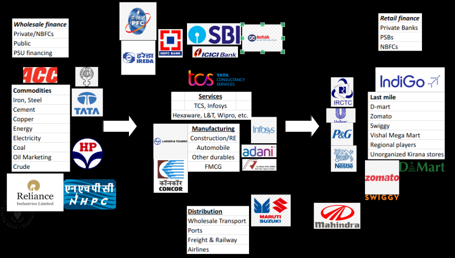
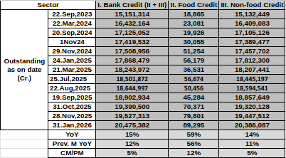
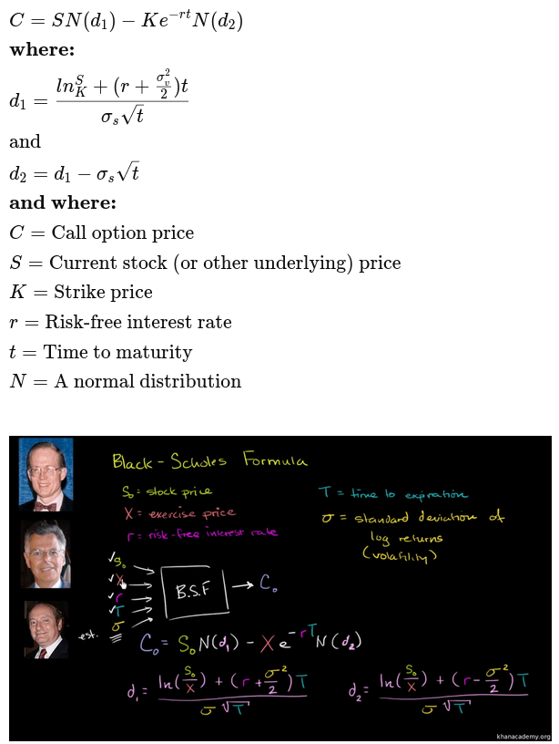
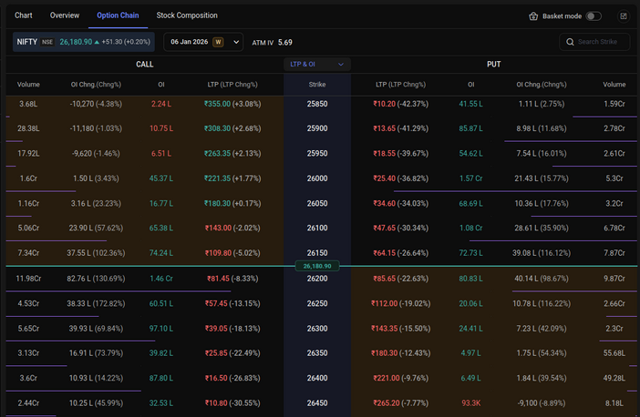
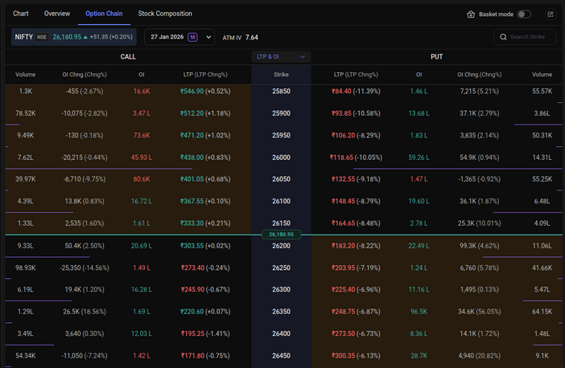
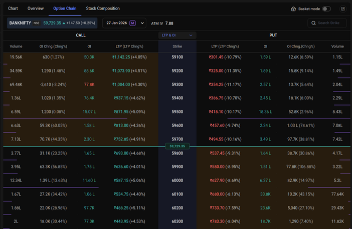
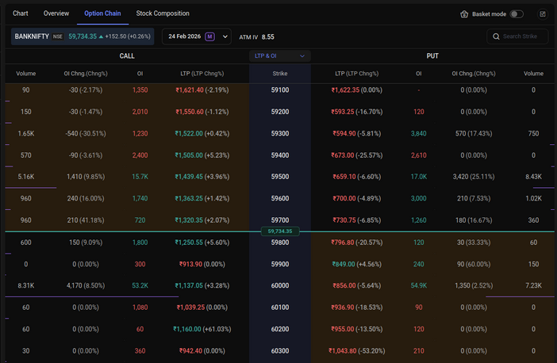
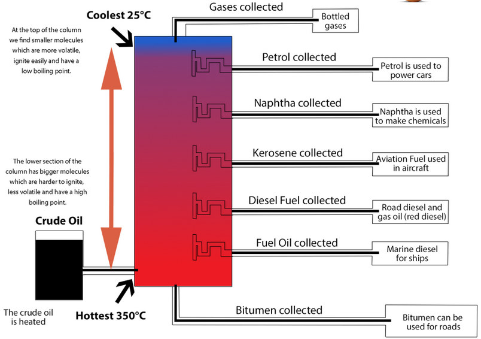

Disclaimer: This content is for research and educational purposes only and is not intended and should not be construed as financial advice. Please do your own research before taking any financial decisions.
Estimated sources and value of revenue - (Values in lk.cr.)
Above is an AI-generated estimate of ~35-39lk.cr. Expected to be collected in FY26 (Impact of GST reforms on reduced collections) baked in above. Source: Grok
Revenue is expected to be flat, ongoing stabilization of direct and indirect taxation is expected. Forecast of the union budget to be presented on 1st Feb’26. Source: Grok

(Values in lk.cr.)
Below are some points to consider with the above budget forecast based on ongoing and announced spending priorities:
1. Debt control - Interest payouts continue to remain 30%+ of total budget. This may continue as loans mature over an extended period of time corroded by inflation. This will also be inline with fiscal deficit (4-4.3%) and inflation (2-2.5%) targets factoring in 100bps rate cuts through the year, and expected GDP growth rate of 8%.
2. Road, Transport, Highways, Railways will continue to remain a priority to drive consumption. However, due to reducing collections, and demand for income, capital gains tax reduction, the allocation may remain flat (or 5%+), including (hopefully) focus on completion of existing infra projects may intensify.
3. This EY report calls for digitization and simplification of BOE and other documentation for customs, and toll across trade hubs transfers to improve tax compliance and coverage including reforms for IFSCs. Adjacent defense spending may also continue in-line, like naval investments which may have synergies infra-synergies
4. Subsidies (MNREGA already being repackaged) may come with reductions.
5. While overall transfers to state may increase to drive top-down implementation of rural and SME/MSME programs; subsidy rationalization may result in commensurate reduction in allocation to ~7-8%
6. Export incentives to supplement US tariffs on capital goods, textile, etc. industries, and budget allocation to compensate for import rebate waivers from China and similar policies globally to promote profitability in these industries, including EMS imports
7. While investment for data-centers and other AI themes (like electronics, chips, energy, etc.) may be required, it may be partially funded through PLI schemes and partially by encouraging FDI to also facilitate knowledge transfer.
Consumption Lifecycle

Given the above spending priorities, how will the government source incremental revenue?
1. Capital Gains Tax - Given the simplification of indirect taxation, and an already simplified income tax regime, that there is a reduction in the capital gains tax (E.g. Higher STCG, lower LTCG).
2. Foreign Investment (Securities) - In light of recent and continuing capital institutional outflows, the government may seek to tax foreign outflows differently (Higher taxes or shorter tenor taxation). It may also have an impact on GIFT city flows if there is a material arbitrage in GIFT city and regular investment taxation flows, and also plug any taxation residency loopholes
3. Foreign Direct Investment - Along with fund-raising for data-center and AI investments with Amazon, Google, Microsoft, etc. the government may tweak tax rules favorably to encourage similar such investments
4. Customs and Trade taxation - With depreciating currencies, exports may be more price competitive and the government could reflect this push through a commensurate trade taxation and digitisation regime
5. EPFO & NPS - The capital markets in search of new liquidity and higher return expectations from NPS and retirement funds (post a rate-cut environment), may result in a further loosening of thresholds to preferred markets for investment or direct investment through the simplifications of corporate bonds (also to provide liquidity in shallow Indian corporate bond markets)
1. Rationalization of AI investments: As initial have been made over the last few years, over 2026-27 there may be additional pressure to identify revenue generation opportunities and rationalize costs (drive efficiencies). As these initiatives play out, we may see a consolidation of AI companies, which may lead to some short-term capital churn between asset classes (Stocks to gold/bonds/currencies and then back). This may have a cascading effect on the Indian IT sector as they may see an influx of these efficiency projects to copilot with AI.
2. Commodity Repricing: If the price of the industrial use-case commodities like silver, copper, palladium, platinum, steel, etc. outpace the R&D cost of a substitute then we may see a correction in some of these asset classes. There may also be a supply side capacity lift, or mining technological breakthrough simplifying the extraction process and rationalizing the commodity prices. Crude and agricultural commodities may see movement if these elevated prices persist.
3. Geopolitical stability:
Listed are few of the strategically important trending geographies from a trade and commodities perspective and resolution or escalation of these issues may provide a direction to companies operating globally.
a. US Tariff-Currency devaluation
b. Japanese interest rates
c. ASEAN political stability for India
d. Ukraine-Russia war
e. Thailand-Cambodia war
f. Israel-MiddleEast war
g. African conflicts; e.g. Sudan
h. Taiwan-China 2027 annexation
i. Panama Canal Monitoring
j. Venezuela Inflation and political stability
4. Inflation, IIP, Unemployment: All-time low inflation, growing industrial production may be offset by expected reduced spending due to GST rate cuts; or an increase in income taxes with rising unemployment from jobcuts in the IT sector may lead to churn in the consumption conditions for the Indian market leading to potentially material impact on FMCG, FMCD, Auto sectors, and subsequent impact on related sectors. Government spending should however continue on infrastructure and defense despite these potential headwinds unless any serious eventualities are realized.
5. Lending and deposit rates, asset quality, interest rates: Monitoring sector-wise lending growth, deposit rates, asset quality, and central bank interest rates could give us an early alert of any sectors over or under performing. Due to consumption slowdown, low inflation, rising unemployment, there is an expectation globally to cut central bank rates to drive growth, but bank lending and deposit rates, along with asset quality figures should help us identify how much of this is trickling down to the economy and how much earnings growth can be realistically expected.
Summarizing the performances of indices below; these current valuations in conjunction with above macro themes could provide a view on overall market and economic sentiment
Are commodities in a “once-in-decades” super cycle?
Since the 2008 financial crisis (actually since the delinking from the standard to peg currency value to gold), acceleration of money printing (in USD, but also globally) to drive economic growth (among other things), has devalued fiat currency in the form of annual inflation in money supply ~5-10%, partially compensated by progressive growth in productivity. However, this trend seems to have been aggravated by the COVID pandemic, high sovereign indebtedness, global geopolitical instability (surfacing as regional conflicts, trade/tariff renegotiations) leading to flight of capital away from equity markets, to sovereign bonds, and subsequently to store of value assets like gold (and silver). This excess liquidity concentrating onto a single asset class along with, now, central bank participation, ETF flows and retail speculation, have led to a parabolic growth in these assets into potential bubble territory.
2. Industrial applications driven by Electric Vehicles/Semi-conductor/battery technology:
The fundamental properties of metals like Gold, Silver is high conductivity (also Copper), low reactivity (corrosion-resistance), and malleability make them conducive to wide-scale industrial application, especially due to shortage of Copper in previous years (demand now relatively stabilized as per below graphic), and the expected AI boom and parabolic growth in applications and related productivity may lead to a “new era” of demand for precious metals currently reflected in the prices.
As you can see palladium, platinum, copper, gold, silver, gold are all around each other in the periodic table
What happens now?
Whether we consider metals as a store of value or of industry application due to ongoing macro trends, there is always the risk of these trends evolving or the cost-benefit of base case metals becomes conducive to substitution.
A. Geopolitical resolution
The sentiment around the USA tariff renegotiation and risk of currency depreciation could ease by end of 2027 as the rollover of US sovereign debt to new rates should conclude by then. BOJ interest rate shocks should also ease by then as they may get domestic inflation under control. We may also have visibility on any potential change to the current arrangement with China-Taiwan, or other countries in the interim are able to build sustainable manufacturing redundancies to make the issue irrelevant from a currency stability standpoint. Localized conflicts in Europe could also reach some form of equilibrium, since end of 2027 could be enough time for other European countries to readjust their budget allocations to military/industrial infrastructure (As Germany seems to have adjusted). These factors could lead to reallocation of speculative liquidity currently in precious metals. The amount of correction in these metals could also give a fair indication of the proportion of speculative liquidity in the system.
B. Industrial applications
Since most competent industrial treasuries would be aware of demand for input commodities before institutional and retail speculative capital, they should have already booked futures to deliver the metals required for future years at an acceptable cost, hence the current price of the commodity may already have all this future demand priced in. If there are new entrants/additional demand of these metals unmet by these contracts, there must be a threshold price that keeps these applications economically feasible, and these assumptions may be susceptible to parabolic moves in input commodity prices. This may have already led to R&D expense in feasible substitutes (Copper, Graphene, Aluminium, etc.) to overcome their current limitations of corrosion, efficiencies, or synthesis/supply. Even if there is a marginal improvement in these current limitations, along with a growth in prices, there would be a point where the switch over would make economic sense, and subsequently economies of scale may kick in.
We have already seen this with Silver in the 80s, which to my understanding at the time may have been driven by applications in cameras (among other things).
In light of the above risks, the current valuations may not be sustainable for speculative investors, and a reversion to mean, or substitution may be inevitable
It is important to track Lending/Banking performance guage the performance of the economy and market sentiments for two reasons:
1. It is one of the most robust sectors in India, and potentially global leaders with innovations like UPI, evidenced by the performance (or sentiment) surrounding the sector as below.
As you can see, financial services and banking has outperformed most sectors only excluding multi-decadal performance by metal sectors and auto demand.

Over-all lending continues to grow inline with GDP exposure; Food-credit seems to have taken a dip. Between Oct'25 and Nov'25 there seems to be an acceleration in lending - this could show up in quarterly results. Below is also a summary of few large PSU and private sector banks and their operational metrics which signal strong growth and asset quality.
2. Sector-wise lending provides a data point on how certain sectors may be expected to perform over 12-24 months (or longer for longer cycle sectors)
Some observations to simplify this data dump (I have input numbers instead of graphs to provide a sense of the scale. Please note that this is outstanding loan amounts data. New book - old book run-off = net figures)
a. Food processing: Edible oils' lending as been decling in 2025, this slowdown seems to be turning around; sugar lending is slowing down so potentially some capex lending may have been completed or some prior lending may have been paid off. Apparently, sectoral headwinds in the tea sector. (Tata Consumer seems to be the only large player in this sector that may benefit from any consolidation.)
b. Textiles: This sector may be benefiting from additional lending with a forward looking view of support to exporter-driven considering there is currency depreciation during this time. However, while YoY rates are speeding up MoM outstanding is lower, so higher run-offs than new book?
c. Fossil & Nuclear fuels funding is up. Crude oil and Petrochemicals could be an investment theme over 3-5 years.
d. Metal mining lending is up; looks logical based on current supply shortage narrative.
e. Lending in Electronics could signal optimism in EMS (Kaynes, Dixon, Tata Tech)
f. Slowdown in lending in Ports, Airports, Telecommunications aligns with the expectation of a slowdown in new govt. spending and focus on implementation, execution/efficiency.
Why Derivatives don't quite work as intended in the Indian market
TLDR: Strong institutional consensus (updward), proliferation of said consensus, illiquid option writing, and high frequency of 4SD (Standard Deviation) events results in elevated valuations and subsequent inefficient price discovery together resulting in speculation in suboptimal positions
“90%+ retail investors in the Indian F&O market are loss-making”
This is a widely quoted statistic displayed as a “caution” on the internet. Since these are risk management instruments, it is counter-intuitive that participants would lose money instead of gaining.
There are 3 kinds of participants in derivatives market: I will stick to equity and/or commodity markets as they are most discussed markets currently.
Participants:
1. Industrial consumers for hedging for demand costs in commodity markets OR Institutional investors hedging their “demand” for long-term equity investment or controlling (or funding) interest in a company
2. Industrial suppliers of commodities OR Promoters and primary (pre-IPO) shareholders of a company who may hedge their existing exposure through F&O
Hereafter referred to as “Institutions”
3. Retail investors who may want to participate in earnings or capital appreciation in either asset classes
Independent decision-making of above participants is key to an efficient price discovery of any publicly traded asset. Futures (Instrument to setup an obligation to buy/sell an asset) or Options (Instrument to retain an option to buy/sell an asset) are used to manage the risk from the uncertainty in this price discovery mechanism.
Instrument:
Futures with a delivery mandate (if available over the counter for the intended asset) require participants to have material liquidity to enable them to take on meaningful exposure leading to mostly industrial or HNI participation. However, Options require participants to pay only a premium to retain the option to buy/sell an underlying asset which allows a participant to take a large delivery exposure with a fraction of the capital required to purchase the underlying upfront. Pricing:

The Black-Scholes model is a theoretical model used to price an option, the key aspects impacting option prices, and hence the profitability of any participant are as follows:
a. Underlying asset price
b. Strike price of option
c. Time to expiry
d. Volatility of the underlying asset
e. Risk-free Rate
Above is a broad understanding of the participants and drivers driving the gains/losses on speculation/hedging through options; why people would lose money most of the time however is more nuanced and becomes clear only when the rubber hits the road.
Below are the execution aspects driving these losses:
1. Awareness: Inadequate understanding of underlying asset price/valuation and/or pricing/tenor mechanisms of options
Fundamentally, options are risk hedging instruments, which are used to manage the risk of investing in the underlying asset class. However, OI data suggest majority of the options liquidity is concentrated in index options, and weekly expiries. Retail mostly doesn’t buy indices for weekly investment, most of the index retail investment flow comes through mutual funds via SIPs, so retail participation in index options and weekly expiries is most likely speculative.
NIFTY50 is a diversified index and by definition should be less volatile than say, an individual stock or sector-specific indices, which may make holding the option less valuable. However, the disproportionate liquidity in these indices bid up (or down) the risk-return on these options for short tenors suboptimal, especially due to the exponential impact of time decay. For investors speculating in options of individual companies, those markets are illiquid for tenors beyond 1-month, which make the options less attractive for hedging purposes if the guidance is for long-term investment (as per the tax-regime).
Writing options however, becomes disproportionately profitable if there are willing buyers if you look at the difference in liquidity for individual stocks and indices and long and short tenors (Refer Appendix).
Comparing the above, to any competent institutional investor who would have an edge with best trading technology, people, understanding, networks, and the directional capital to write options – Retail investors rarely stand a chance to spot any outsized return typified by a turning market.
2. Infrastructure: Inadequate guardrails/governance on time to expiry, fair valuation and liquidity in contracts
Given the speculative nature of majority of the retail flow into the options market, and no single direction of this capital established, the deficiency of the retail participant is not unclear.
However, market-making and surrounding infrastructure simplify the above behavior based on the availability of the below features/bugs:
a. Illiquidity or mispriced options available for longer tenors
b. Short tenor expiries encouraging speculation
c. Limited punitive action against institutional players manipulating the market (E.g. Jane Street)
While the above aspects are widely understood, and for lack of an alternative, accepted, there is a fundamental upward bias in the prices of the underlying assets as a result.
3. Speculation/Manipulation: Euphoric speculation by retail investors (as evidenced by the record bull run and IPO valuations), vs. Organized (Advertent/Inadvertent) Manipulation by institutional players
The above two points cover a large aspect of the retail speculation within options, and the edge institutional players have over retail investors; however, a key narrative regarding the network-effect of capital controlled by institutions and politically connected participants forms a key aspect of the upward bias in the asset prices in the Indian market, to my mind.
Let me explain -
Since, 2014 the government through AMFI, has run the “Mutual funds sahi hai” campaign to make Indian markets more liquid. This was part of the promise of the NDA government as markets rallied on Modi’s election. This also makes sense, to increase liquidity in a market to provide an efficient price discovery mechanism which can help attract foreign investment (FDI/FII).
Record SIP flows have since moved into mutual funds of all categories (small, large, mid, sectoral, themed), while large foreign and institutional players also invest their own proprietory capital through funds/investment entities into the market. SIP flows can only be invested in buying assets, whatever the price may be (as is highlighted by the high PE of major stocks), and especially since the market investment narrative is centralized, this capital is not independent in its decision-making, having been run as a campaign centrally and executed by SIP managing funds.
If the liquidity of the buying funds matched the arbitrage funds, or high-risk hedge funds able to short over-valued assets there would be reasonable downward bias to offset the current euphoria about Top-5 GDP India and the growth story, in which capital allocation naturally leads execution and earnings outcomes. In the Indian market government spending is driving, as is the need, Infrastructure, agriculture, and defense development alongwith fiscal and current account deficit management. These projects are notorious for project over-runs and hence, may lead to even further delay in realization of expected earnings, if done correctly. This upward bias (or lack of downward bias) is also encouraged by participation in the stock market by major decision-making politicians, and direct investment through stake purchases into entities like LIC and opening up stock investment for pension funds.
Without this downward pressure on underlying asset prices we run the risk of sharp corrections on large standard deviation events leading to immediate price discovery or worse, over-correction, which currently can only be realized through a “run on the mutual funds”, in case there is a systemic need for funds in the market. The Indian market has still shown significant resilience countering 4+ SD (Standard Deviation) events with our own 4+ SD events, examples;
Examples:
1. Trade Tariffs and Geopolitical tensions! → Diplomatic gymnastics managing Crude imports through Russia, while placating USA mandates, and E10-E20 in fuel consumption to offset over-reliance on Russia as well, all while dodging the politically charged Ukraine-Russia war. Managing relationship with China to drive EMS growth while controlling military mischief within the ASEAN region and regional unrest in Pakistan, Nepal, Bangladesh, and Sri Lanka. All major indices have provided 5%+ returns, while Gold/Silver continue to accelerate on concerns based on these issues. This also happened in the backdrop of the multi-decade event of the Japanese interest rate hike, which may have a material impact on the global liquidity flows, as subsequent FII asset allocation which may have surfaced in India as the record FII sell-off, which DIIs have absorbed.
2. Lending slowdown! → While lending has slowed down over the past year with worsening asset quality (improving over the previous quarter), one would not expect such swift action from RBI (or one would) in rewriting the provisioning norms for banks forseeing the impact of worsening asset quality and pressure on margins as lending growth slows. This alongwith PSB Manthan aiming to improve ROAs of public sector banks by organic or inorganic, local/foreign investment has helped maintain the sentiment in the market. How much and how soon the lending growth and asset quality impact on NIMs is realized however, is anybody’s guess. Bond yields would suggest Jul’26 onwards, RBI provisioning implementation timelines would suggest Mar’27. (More on this to follow and tracking page)
3. Commodity “Supercycle”! → Another 4SD event which may have impacted input costs of a lot of the companies is the increasing speculation, not just in Gold/Silver, but also in Copper, Steel, Palladium, Platinum. The rise in input commodity prices is usually foreseen and hedged against by institutional players but may impact the flow of retail liquidity in metal ETFs (still a fraction of the overall liquidity in the Indian market).
4. Resilience of Indian Corporate Governance → In light of the above 4SD events, major Indian corporations have shown world-class risk management measures.
a. TATA Motors – Despite several events like the JLR cyber attack, production halt, death of Ratan Tata, discord in the board of directors, demerger of the passenger/commercial businesses, commodity prices, EV adoption and local market competition – TATA motors continues to maintain status quo in their business, with post-demerger valuations still matching previous valuations, which may signal an internal overhaul in the business
b. Many IT companies seem to have incorporated the synergies from AI-led disruption which is reflected in the reduction in headcount which may potentially lead to better margins in future
c. Pharma companies investing in the US market, being able to create a price moat, allowing them to survive the trade tariff on-slaught. (More on this to follow)
d. Prudent risk-management by Reliance Industries in de-risking from sanctioned oil exposure to maintain the operating margin advantage over other oil refining and marketing companies.
All of the above are only a handful examples displaying the anti-fragile nature of the Indian business and subsequently the stock market. However, the frequent occurrence of such 4SD events and a limited availability of expertise and access to information to predict the timing and impact of the event or the efficacy of the counter-measures require an indepth and ongoing knowledge of the system and ongoing affairs.
This separates the retail investor from the expert/institution/inside who may profit from such events.
It is also a common anecdote that a lot of speculators lose their capital and then stop trading completely; this metric may also be susceptible to survivor (or in this case not-survivor) bias.
What are the solutions?
I am not an investment expert, but I can suggest prudent risk management -
1. Limiting and Diversifying Exposure - 5% of total capital, and if you are looking for a 10% ROI, maybe 6/10 positions are in the direction of your expected trend. There are tools available which allow you to calculate the correlation of various investments in your portfolio, or you could look this up, but they are mostly logical.
2. Write Options
3. Only Hedge?
Anything beyond this, like betting in the direction of a trend, charts, timing, etc. is upto your research and understanding, but with adequate risk management maybe we are able to protect our capital and minimize the impact of the edge institutions have against the retail investor. Ultimately, it is a zero-sum game - if you are on one side of a trade, there is someone on the other side.
If in this case, we know that DII holding dominates and drives market holding, and option writers are also institutional, there would be two kinds of institutional option writers:
a. Who own an asset and write puts to lock in their sale price for the purpose of hedging
b. Who own an asset and write puts knowing they are not going to sell their asset understanding this upward bias
And the difference between the two, for the retail investor, isn’t much, and what happens in 2026 is anybody’s guess.
Appendix as on end of Dec'25
6th Jan NIFTY50 Expiry OI Vs. 27 Jan NIFTY50 Expiry OI
 
Jan BNF Expiry OI Vs. Feb BNF Expiry OI
 
Jan OI Vs. Feb OI for high market cap individual stocks
The Indian pharmaceutical industry has been a consistent compounder for many years (as can be seen by the high PE most companies command), growing in revenue both domestically and globally. Based on my research, Indian pharmaceutical companies provide the below two value additions in the pharmaceutical ecosystem:
a. Cheap generic OTC or patented drugs in developed markets in the USA known colloquially as the pharmacy of the world. The depreciation of the INR may provide a key tailwind to the industry along with specialty chemicals supplying globally and CRAMs specializing organizations like Divis Labs.
b. Distribution of global drugs in the Indian market (Cipla, Torrent)
Above is a summary of some companies and their operations. These have been till date immune to US tariffs as the decree applies only to organizations who have not made any direct investment in the US; which in this graph is only Torrent Pharma (at the time of writing).
Why does Reliance consistently beat BPCL, IOCL, HPCL? - Indian Oil Refining and Marketing
Based on the below comparison, you can see that RIL (Oil Refining and Marketing) consistently beats BPCL, IOCL, HPCL on operational performance. There are two hypothesis to why that may be:
Post Edit (16-01-2026) - Including product-wise break-up as this is not readily apparent from the overall margins (Retail, Telecom both relatively lower margin contributing businesses)
1. Operational Efficiencies

As we can see, there is clear opportunity to find operational efficiencies in heating fuel consumption, economies of scale in refining capacity and minimizing leakages in collection of distillates.
From the below table, we can see that a lot of the PSU refinery capacity is decades old, and may need upgradation to meet these efficiencies. HPCL is also adding refinery capacity (9-27MMTPA across projects) which could provide an operating margin boost to PSU refineries.
2. Sourcing of low-cost oil: BRENT and other crude oil trading benchmarks only form a small portion of global traded crude oil volume. Companies/Countries may be able to procure cheaper oil bilaterally like Russia till recently, and Saudi potentially.
About
Publishing my research for the purpose of education, peer review, and discourse. You can reach out to me at:


 Some observations to simplify this data dump (I have input numbers instead of graphs to provide a sense of the scale. Please note that this is outstanding loan amounts data. New book - old book run-off = net figures)
Some observations to simplify this data dump (I have input numbers instead of graphs to provide a sense of the scale. Please note that this is outstanding loan amounts data. New book - old book run-off = net figures)

 Above is a summary of some companies and their operations. These have been till date immune to US tariffs as the decree applies only to organizations who have not made any direct investment in the US; which in this graph is only Torrent Pharma (at the time of writing).
Above is a summary of some companies and their operations. These have been till date immune to US tariffs as the decree applies only to organizations who have not made any direct investment in the US; which in this graph is only Torrent Pharma (at the time of writing).